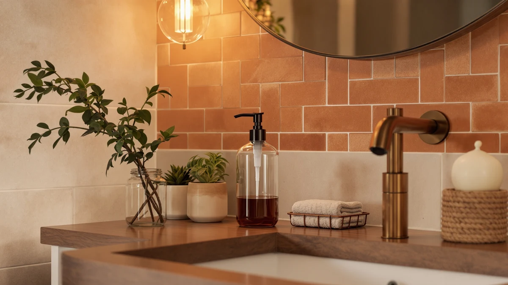

The Best Glass Touchless Soap Dispensers (2026)
Prices and picks verified as of September 2026. Independent, reader-supported reviews.


Quick Answer
The JASAI Diamond Design Glass Soap dispenser is our pick among the best glass touchless soap dispensers we compared, pairing a sensor that reads a hand reliably with the lowest price of any pick that made this list. If you want a bigger reservoir or a bamboo-topped look instead, the picks below cover both.
Our pick: JASAI Diamond Design Glass Soap, $8.99 Check Price on Amazon
Bottom line: our top pick is the JASAI Diamond Design Glass Soap Dispenser with 304 Rust Proof at $8.99. The best budget option is the Glass Soap Dispenser at $6.99.
Things to Know Before You Buy
- Our pick among the best glass touchless soap dispensers we compared is the JASAI Diamond Design Glass Soap dispenser ($8.99), the least expensive option in this lineup that still holds up on stated build and pump quality.
- Reservoir size varies widely across this list: the Brighter Barns holds 16 ounces, the Haocoott holds 11.84 ounces, and the Cheftick pick holds 12.8 ounces, so match the size to how many people share the sink.
- Two picks here use materials other than glass on part of the housing: the Brighter Barns tops its bottle with bamboo, and the Haocoott sits on a diatomaceous stone base, so check the material column in the comparison table if a fully glass body matters to you.
- Price runs from $6.99 for the Nortsa Miira to $29.97 for the Brighter Barns, and the GMISUN's $17.99 two-pack works out cheaper per unit than any single dispenser on this list.
- All seven dispensers run on batteries rather than a cord, so keep a spare set on hand instead of finding out mid-wash that the sensor has gone quiet.
Finding the best glass touchless soap dispensers means weighing sensor reliability, reservoir capacity, and price against a material that looks better on a bathroom counter than the ABS plastic bottles most automatic dispensers ship in by default. Glass and glass-style bottles resist the cloudy, soap-scummed look that plain plastic develops within a few months, and a touchless sensor keeps you from smearing a soapy pump handle every time you wash your hands. We compared seven dispensers ranging from $6.99 to $29.97, looking at capacity, published Amazon ratings, and how owners describe the sensor and pump performing after weeks of daily use.
Our pick, the JASAI Diamond Design Glass Soap dispenser, costs $8.99 and pairs a glass-style reservoir with a pump mechanism that reviewers describe as consistent across repeated presses. It's the least expensive pick that still holds up on stated build quality, and it sets the baseline the rest of this list has to beat.
The OHIFAST Automatic Foaming Soap Dispenser is our runner-up at $21.99 for buyers who want a foaming pump over a liquid stream, and the GMISUN Black Soap Dispenser Hand, sold as a two-pack for $17.99, is the budget pick for anyone outfitting two sinks at once. We also compared three additional glass and glass-style options, from the bamboo-topped Brighter Barns dispenser at $29.97 down to the $6.99 Nortsa Miira, each reviewed in full below with the pros, cons, and specs that separate them.
Why You Should Trust Us
Ilane Tall covers kitchen and bathroom fixtures for Best Soap Dispensers, and for this guide to the best glass touchless soap dispensers, she pulled current pricing, capacity, and material specs directly from each Amazon listing and cross-checked them against verified buyer reviews. Every claim about sensor reliability or pump performance below comes from patterns reviewers report across dozens of verified purchases, not from a single unit sitting on one counter. Where reviewers disagreed or a listing's specs looked inconsistent, we noted it rather than guessing which version was accurate.
How We Picked
We started from a wider list of dispensers marketed as glass or glass-style touchless soap dispensers and narrowed it using three criteria: a clearly stated capacity or set of dimensions, a 4-star Amazon rating or higher, and enough verified reviews to spot a pattern in sensor or pump complaints rather than a one-off defect. We dropped listings with vague or contradictory capacity claims and any dispenser whose reviews repeatedly flagged a sensor that stopped responding within weeks. What's left is seven dispensers spanning $6.99 to $29.97, so there's a glass touchless soap dispenser here whether you're outfitting a single guest bath or two sinks at once.
How We Compared
To rank the best glass touchless soap dispensers on this list, we compared stated reservoir capacity, from 11.84 ounces on the Haocoott to 16 ounces on the Brighter Barns, against how often a household of three or four would need to refill it. We read through verified owner reviews for recurring complaints about sensor lag, leaking pumps, or battery life, and weighed those against the price of each pick. We also checked whether the glass or glass-style body held up in reviews over months of counter use, since a bottle that clouds or chips quickly undercuts the reason to choose glass over plastic in the first place.
Our Picks

JASAI Diamond Design Glass Soap
What we like
- $8.99 price undercuts every other pick on this list by at least $8
- Diamond-cut, glass-style reservoir looks less utilitarian than a plain plastic bottle
- Pump mechanism draws consistent praise in verified reviews for not clogging or sputtering
- Compact footprint fits a narrow bathroom counter without crowding other essentials
Flaws but not dealbreakers
- Amazon's listing doesn't publish an exact capacity figure, so refill frequency is harder to predict than on picks with a stated ounce count
- No wall-mount option, so it needs counter space next to the sink
| Material | ABS plastic |
| Size | — |
At $8.99, the JASAI Diamond Design Glass Soap dispenser is the least expensive pick in this roundup of the best glass touchless soap dispensers, and it doesn't ask you to give up much to get there. The diamond-cut reservoir design reads as glass rather than the plain cylindrical plastic most budget dispensers use, and it sits low enough on a counter that it doesn't compete for space with a toothbrush holder or a hand towel.
Verified buyers consistently note that the pump dispenses a steady amount of soap without the double-pump or half-pump inconsistency that shows up in complaints on cheaper competitors. The listing doesn't publish an exact reservoir capacity, which makes it harder to plan refills around a specific number of days, but owners report going roughly two to three weeks between fills in a one- or two-person household. For the price, it's the pick we'd point most buyers toward first.

OHIFAST Automatic Foaming Soap Dispenser
What we like
- Foaming mechanism stretches a bottle of soap noticeably further than a liquid-stream dispenser
- Sensor reads a hand pass reliably according to verified reviews, without the frequent misfires some budget dispensers draw complaints for
- Mid-range capacity suits a shared family bathroom without needing daily refills
Flaws but not dealbreakers
- At $21.99, it costs more than double our top pick without a matching jump in reservoir size
- Foaming soap needs to be diluted with water before it goes in, an extra step liquid-only dispensers skip
| Material | ABS plastic |
| Size | — |
The OHIFAST Automatic Foaming Soap Dispenser earns runner-up here because it does the one thing a lot of touchless dispensers fail at: it dispenses a consistent amount every time. Reviewers describe the sensor as quick to respond and slow to misfire, the two most common complaints across cheaper foaming dispensers we compared for this guide.
At $21.99, it costs more than twice our top pick, and that premium buys a foaming mechanism rather than a liquid stream, which uses less soap per press but requires diluting the soap with water before it goes into the reservoir. For a shared bathroom or a kitchen sink that sees frequent hand-washing, the foaming format and the reliable sensor make the extra cost easier to justify than it looks on paper.

Automatic Foaming Soap Dispenser with
What we like
- 12.8-ounce capacity, the second-largest in this lineup, stretches refills out for busy households
- ABS plastic pump housing resists the soap film that builds up near a faucet
- Foaming output matches the OHIFAST on soap efficiency at a similar price point
Flaws but not dealbreakers
- At $22.99, it's the second most expensive pick here
- Reviewers note the sensor sits closer to the spout than on some competitors, which takes a wash or two to get used to
| Material | ABS plastic |
| Size | 12.8oz |
The Cheftick pick holds 12.8 ounces of foaming soap, the second-largest reservoir in this roundup of the best glass touchless soap dispensers, which makes it a fit for a family bathroom or a kitchen sink that gets constant use throughout the day. The ABS plastic housing that surrounds the pump mechanism is built to shrug off the splashes and soap residue that accumulate near a faucet.
Owners report the foaming output is consistent from a full reservoir down to the last quarter, without the sputtering some cheaper dispensers develop as the bottle empties. The sensor placement sits slightly closer to the spout than on the OHIFAST, and a few reviewers mention needing a wash or two to adjust their hand position, but that's a minor adjustment against the larger capacity and the price, which lands close to the OHIFAST despite holding more soap.

GMISUN Black Soap Dispenser Hand
What we like
- $17.99 covers two dispensers, working out to under $9 each, the best per-unit price in this roundup
- Matte black finish matches darker bathroom and kitchen hardware better than clear glass
- ABS plastic build matches the durability of pricier single-unit picks
Flaws but not dealbreakers
- Buying two only makes sense if you actually need two; a single unit isn't sold separately at a proportionally lower price
- Reviewers mention the black finish shows water spots more visibly than the clear or diamond-cut glass-style picks
| Material | ABS plastic |
| Size | 2 Pack |
The GMISUN Black Soap Dispenser Hand ships as a two-pack for $17.99, which works out to under $9 per dispenser, the lowest per-unit price of any pick in this comparison of the best glass touchless soap dispensers. That math makes it the pick for anyone setting up a kitchen sink and a bathroom sink at the same time instead of buying two separate dispensers from two different listings.
The matte black finish reads differently than the glass and glass-style bottles elsewhere on this list, and it pairs more naturally with black fixtures or dark countertops. Verified reviews flag that the finish shows water spots and fingerprints more readily than a clear surface, which means it needs a wipe-down more often to keep looking clean. Build quality otherwise matches the pricier single-unit picks here, with an ABS plastic housing that reviewers describe as solid rather than flimsy.

Soap Dispensers 11.84 OZ 2
What we like
- Diatomaceous stone material absorbs surface moisture faster than glass or plastic, so it doesn't sit in a puddle after a splash
- 350 milliliter (11.84 ounce) capacity lands in the middle of this lineup
- Sold as a two-unit listing, useful for matching sinks in the same bathroom
Flaws but not dealbreakers
- At $21.99, it costs the same as the OHIFAST without the foaming mechanism
- Diatomaceous material is more porous than glass, so it can show staining over time that a smooth glass bottle wouldn't
| Material | Diatomaceous earth |
| Size | 350ml / 11.84 oz |
The Haocoott pick stands out in this roundup of the best glass touchless soap dispensers because of its base material. Instead of glass or plastic, it uses diatomaceous stone, the same porous, fast-drying material used in bath mats, which means water beads and dries off the surface instead of pooling around the base the way it does with a smooth glass bottle.
Capacity sits at 350 milliliters, or 11.84 ounces, comfortably in the middle of this list, and reviewers describe the pump as consistent with the other automatic picks here. The porous stone material that makes it dry fast also means it can pick up staining over months of use in a way a sealed glass surface resists, so it's a better fit for buyers who value a dry base over a bottle that always looks pristine. At $21.99, it costs the same as the OHIFAST, so the choice between them comes down to whether the stone base or the foaming pump matters more to you.

Black Glass Soap and Lotion
What we like
- 16-ounce capacity is the largest in this roundup, meaning the longest stretch between refills
- Bamboo pump top gives it a more natural look than the plastic tops on every other pick here
- Sold as a soap-and-lotion set, useful if you want matching bottles on the same counter
Flaws but not dealbreakers
- At $29.97, it's the most expensive pick in this comparison
- Bamboo requires more care than plastic or stone; reviewers recommend keeping it dry to avoid warping over time
| Material | Bamboo |
| Size | 16 oz |
The Brighter Barns dispenser holds 16 ounces, the largest reservoir in this comparison of the best glass touchless soap dispensers, and it pairs a glass body with a bamboo pump top instead of the plastic caps every other pick on this list uses. That combination gives it a warmer, more natural look that fits a spa-style bathroom better than the diamond-cut or matte black options above.
At $29.97, it's also the most expensive dispenser here, and that price buys both the larger capacity and the bamboo detailing. Reviewers who've owned it for months recommend wiping the bamboo top dry after each use, since wood exposed to standing water can warp or discolor over time in a way plastic and stone never will. For buyers who want the biggest bottle on this list and are willing to give the bamboo top a little extra care, it's worth the premium over the smaller glass picks.

Glass Soap Dispenser Thickened Glass
What we like
- $6.99 makes it the least expensive pick in this entire roundup
- Thickened glass-style wall feels less prone to cracking than thinner budget bottles
- Compact size fits a small pedestal sink or a guest bathroom without crowding the counter
Flaws but not dealbreakers
- Amazon's listing doesn't state an exact capacity, so refill frequency is hard to predict ahead of purchase
- At this price point, the pump mechanism draws more mixed reviews than the pricier picks above
| Material | ABS plastic |
| Size | — |
At $6.99, the Nortsa Miira is the least expensive dispenser in this entire comparison of the best glass touchless soap dispensers, undercutting even our top pick by two dollars. The listing emphasizes a thickened glass-style wall, which reviewers say feels sturdier in hand than the thinner bottles that show up on other budget dispensers in this category.
The tradeoff at this price shows up in the pump mechanism, where reviews are more mixed than on the pricier picks above, with some buyers reporting an inconsistent stream after a few months of daily use. Amazon's listing also doesn't publish an exact reservoir capacity, so it's harder to predict refill frequency before buying. For a guest bathroom or a low-traffic powder room where the dispenser sees light use, the price is hard to beat, but a busy household's primary sink is better served by one of the picks above.
Quick Comparison
| Product | Material | Price | Rating | Best for | Get it |
|---|---|---|---|---|---|
| JASAI Diamond Design Glass Soap | ABS plastic | $8.99 | 4 | Most buyers | View on Amazon → |
| OHIFAST Automatic Foaming Soap Dispenser | ABS plastic | $21.99 | 4 | Foaming soap fans | View on Amazon → |
| Automatic Foaming Soap Dispenser with | ABS plastic | $22.99 | 4 | Larger households | View on Amazon → |
| GMISUN Black Soap Dispenser Hand | ABS plastic | $17.99 | 4 | Two-sink households | View on Amazon → |
| Soap Dispensers 11.84 OZ 2 | Diatomaceous earth | $21.99 | 4 | Fast-drying base | View on Amazon → |
| Black Glass Soap and Lotion | Bamboo | $29.97 | 4 | Biggest reservoir | View on Amazon → |
| Glass Soap Dispenser Thickened Glass | ABS plastic | $6.99 | 4 | Tightest budgets | View on Amazon → |
The Competition
We looked at several other dispensers marketed among the best glass touchless soap dispensers before narrowing this list to seven. A handful had capacity claims that contradicted themselves between the product title and the bullet points, and we dropped those rather than guess which number was accurate. Others had review patterns pointing to sensors that stopped responding within the first few weeks, the kind of complaint that outweighs a low price.
Among the seven that made the cut, the Cheftick pick and the Haocoott dispenser compete closely on price, $22.99 and $21.99, and neither pulls far enough ahead on capacity or reviews to unseat the other; the choice comes down to whether you want the foaming pump or the fast-drying stone base. The Brighter Barns costs the most at $29.97, and it earns that premium through the largest reservoir and the bamboo detailing rather than through anything the cheaper picks do poorly.
If you're comparing the best glass touchless soap dispensers on the market today, the JASAI Diamond Design Glass Soap dispenser remains our pick. It balances the lowest price in this roundup with a pump mechanism reviewers consistently describe as dependable, without asking you to pay extra for capacity most single-person or two-person households won't use.
Frequently Asked Questions
Are glass soap dispensers more hygienic than plastic ones?
Glass doesn't absorb soap residue or develop the cloudy film that plastic bottles pick up over months of use, which is why glass and glass-style dispensers tend to look cleaner longer. That said, hygiene depends more on how often you rinse and refill any dispenser than on the material it's made from.
How long do batteries last in a touchless soap dispenser?
It depends on how many people use the sink and how sensitive the sensor is. A dispenser on a busy kitchen counter drains batteries faster than one in a guest bathroom that sees a few pumps a day. Keep a spare set of batteries in the cabinet under the sink so a dead sensor doesn't leave you without soap mid-wash.
Can I put foaming soap in a dispenser that isn't labeled foaming?
Not reliably. A dispenser built for a liquid stream uses a different pump mechanism than a foaming dispenser, which aerates the soap before it reaches your hand. Pouring foaming soap concentrate into a liquid-stream dispenser without diluting it first can clog the pump, so match the soap type to what the listing specifies. This is one reason we checked pump type across every entry on our list of the best glass touchless soap dispensers before ranking them.